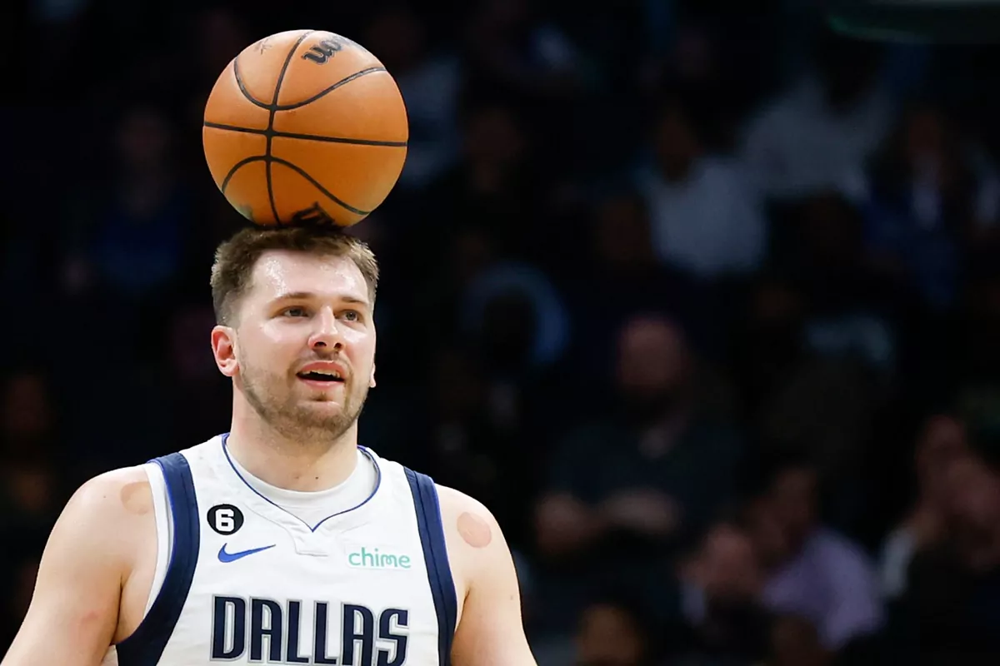

Sports
Growing up, the basketball and baseball courts were my second home. Throughout high school, I dedicated myself to basketball, playing for both my school's team and in the competitive AAU club league. Despite not being the tallest, fastest, or most athletic player, I was deeply motivated by the camaraderie and synergy of being part of a team. I believed—and still believe—that a team that’s disciplined in offense and defense operates like a finely-tuned machine, where each role is pivotal. The camaraderie of practice, the anticipation of the next game, and the singular focus on the team's next challenger are experiences I hold dear and often find myself longing to relive.
Who I follow
 There are only two players in NBA history to average at least 30 points, five rebounds and five assists during their playoff career... Luka and Michael JordanI have been a LeBron fan all my life. I regard him as one of the most phenomenal athletes in history. The sheer magnitude of his influence on the game of basketball is unparalleled. At the age of 39, remaining a top-tier player in the NBA is not just impressive—it's a testament to his exceptional athleticism and profound sports IQ.
Apart from LeBron, Luka is my other favorite player. He just turned 25 and he's already solidified himself as one of the top 3 players in the league. Only very few players have ever been able to do that at such a young age. One of the reasons I love watching Luka is because he is not the fastest or most atheltic player on the court. What makes him elite is his perfected fundamental skills and insane basketball IQ. In these respects, he mirrors LeBron, particularly in the way he elevates his teammates' play and exhibits a strategic mastery over the court.
Halo
Without Halo, my childhood would be very different. Same as my friends. A few close friendships of mine were forged simply because we loved playing Halo together. Masterchief will always be an esteemed childhood hero of mine.
The Most true book
Serving as a fulltime missionary in Mexico, I witnessed the true power the Book of Mormon can have on our conversion to God. The book is one of the ways we can truly grow closer to our Heavenly Father and his Son Jesus Christ. I have seen this book change the lives of many and seen it guide them to happiness. I know this book is true and that the Prophet Jospeh Smith was able to translate it through the power of God.
My dear associates in the work of the Lord, I implore each of us to prayerfully study and ponder the Book of Mormon each day. As we do so, we will be in a position to hear the voice of the Spirit, to resist temptation, to overcome doubt and fear, and to receive heaven’s help in our lives. I so testify with all my heart in the name of Jesus Christ, amen. Thomas S. Monson, April 2017.